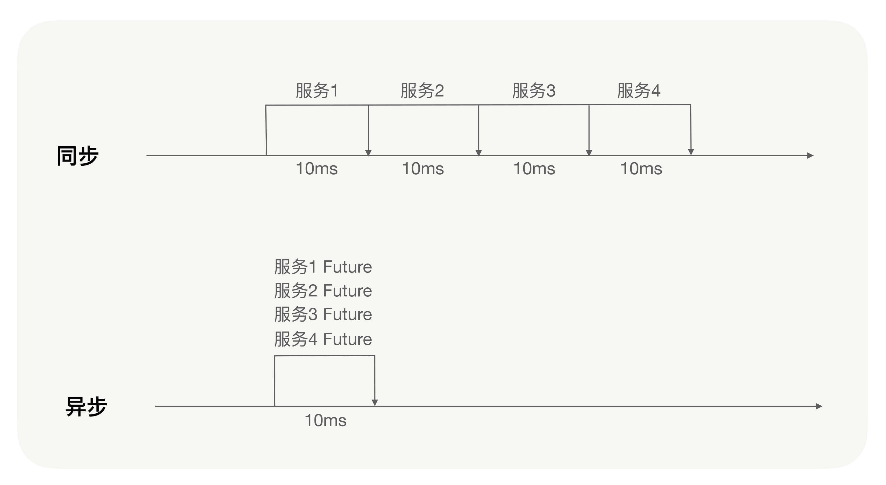
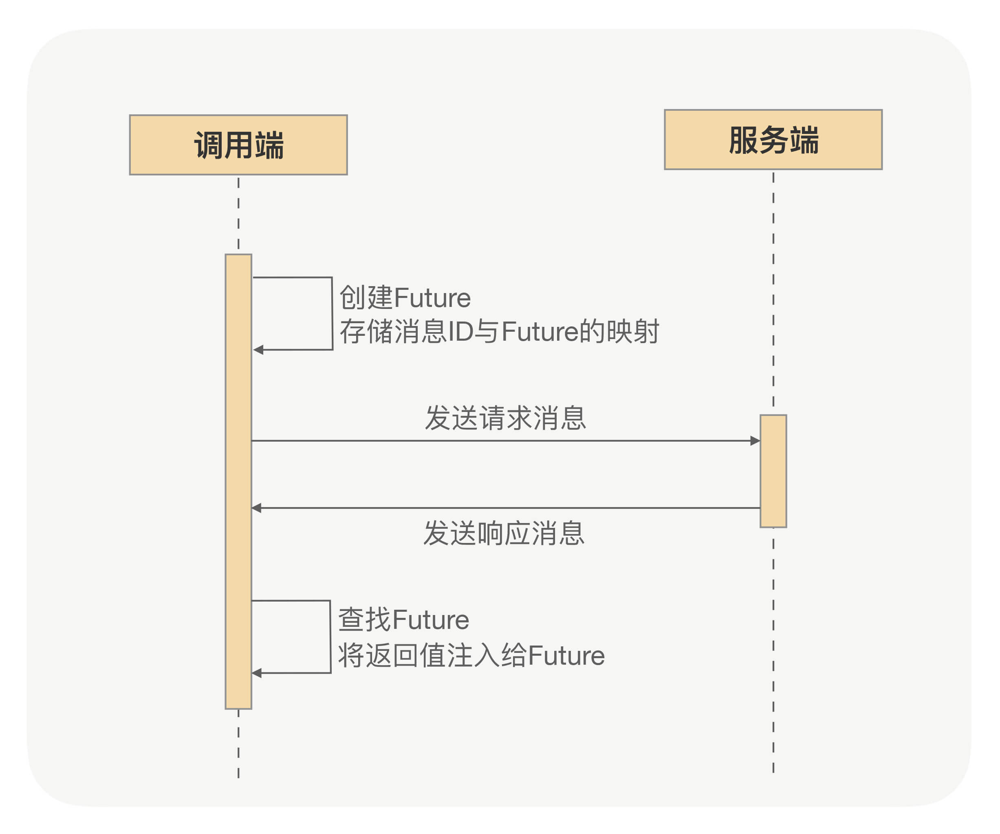

- 00 开篇词 别老想着怎么用好RPC框架，你得多花时间琢磨原理.md.html
- 01 核心原理：能否画张图解释下RPC的通信流程？.md.html
- 02 协议：怎么设计可扩展且向后兼容的协议？.md.html
- 03 序列化：对象怎么在网络中传输？.md.html
- 04 网络通信：RPC框架在网络通信上更倾向于哪种网络IO模型？.md.html
- 05 动态代理：面向接口编程，屏蔽RPC处理流程.md.html
- 06 RPC实战：剖析gRPC源码，动手实现一个完整的RPC.md.html
- 07 架构设计：设计一个灵活的RPC框架.md.html
- 08 服务发现：到底是要CP还是AP？.md.html
- 09 健康检测：这个节点都挂了，为啥还要疯狂发请求？.md.html
- 10 路由策略：怎么让请求按照设定的规则发到不同的节点上？.md.html
- 11 负载均衡：节点负载差距这么大，为什么收到的流量还一样？.md.html
- 12 异常重试：在约定时间内安全可靠地重试.md.html
- 13 优雅关闭：如何避免服务停机带来的业务损失？.md.html
- 14 优雅启动：如何避免流量打到没有启动完成的节点？.md.html
- 15 熔断限流：业务如何实现自我保护_.md.html
- 16 业务分组：如何隔离流量？.md.html
- 17 异步RPC：压榨单机吞吐量.md.html
- 18 安全体系：如何建立可靠的安全体系？.md.html
- 19 分布式环境下如何快速定位问题？.md.html
- 20 详解时钟轮在RPC中的应用.md.html
- 21 流量回放：保障业务技术升级的神器.md.html
- 22 动态分组：超高效实现秒级扩缩容.md.html
- 23 如何在没有接口的情况下进行RPC调用？.md.html
- 24 如何在线上环境里兼容多种RPC协议？.md.html
- 加餐 RPC框架代码实例详解.md.html
- 加餐 谈谈我所经历过的RPC.md.html
- 答疑课堂 基础篇与进阶篇思考题答案合集.md.html
- 结束语 学会从优秀项目的源代码中挖掘知识.md.html
- 捐赠
17 异步RPC：压榨单机吞吐量
你好，我是何小锋。从今天开始，我们就正式进入高级篇了。
在上个篇章，我们学习了RPC框架的基础架构和一系列治理功能，以及一些与集群管理相关的高级功能，如服务发现、健康检查、路由策略、负载均衡、优雅启停机等等。
有了这些知识储备，你就已经对RPC框架有了较为充分的认识。但如果你想要更深入地了解RPC，更好地使用RPC，你就必须从RPC框架的整体性能上去考虑问题了。你得知道如何去提升RPC框架的性能、稳定性、安全性、吞吐量，以及如何在分布式的场景下快速定位问题等等，这些都是我们在高级篇中重点要讲解的内容。难度有一定提升，希望你能坚持学习呀！
那么今天我们就先来讲讲，RPC框架是如何压榨单机吞吐量的。
如何提升单机吞吐量？
在我运营RPC的过程中，“如何提升吞吐量”是我与业务团队经常讨论的问题。
记得之前业务团队反馈过这样一个问题：我们的TPS始终上不去，压测的时候CPU压到40%～50%就再也压不上去了，TPS也不会提高，问我们这里有没有什么解决方案可以提升业务的吞吐量？
之后我是看了下他们服务的业务逻辑，发现他们的业务逻辑在执行较为耗时的业务逻辑的基础上，又同步调用了好几个其它的服务。由于这几个服务的耗时较长，才导致这个服务的业务逻辑耗时也长，CPU大部分的时间都在等待，并没有得到充分地利用，因此CPU的利用率和服务的吞吐量当然上不去了。
那是什么影响到了RPC调用的吞吐量呢？
在使用RPC的过程中，谈到性能和吞吐量，我们的第一反应就是选择一款高性能、高吞吐量的RPC框架，那影响到RPC调用的吞吐量的根本原因是什么呢？
其实根本原因就是由于处理RPC请求比较耗时，并且CPU大部分的时间都在等待而没有去计算，从而导致CPU的利用率不够。这就好比一个人在干活，但他没有规划好时间，并且有很长一段时间都在闲着，当然也就完不成太多工作了。
那么导致RPC请求比较耗时的原因主要是在于RPC框架本身吗？事实上除非在网络比较慢或者使用方使用不当的情况下，否则，在大多数情况下，刨除业务逻辑处理的耗时时间，RPC本身处理请求的效率就算在比较差的情况下也不过是毫秒级的。可以说RPC请求的耗时大部分都是业务耗时，比如业务逻辑中有访问数据库执行慢SQL的操作。所以说，在大多数情况下，影响到RPC调用的吞吐量的原因也就是业务逻辑处理慢了，CPU大部分时间都在等待资源。
弄明白了原因，咱们就可以解决问题了，该如何去提升单机吞吐量？
这并不是一个新话题，比如现在我们经常提到的响应式开发，就是为了能够提升业务处理的吞吐量。要提升吞吐量，其实关键就两个字：“异步”。我们的RPC框架要做到完全异步化，实现全异步RPC。试想一下，如果我们每次发送一个异步请求，发送请求过后请求即刻就结束了，之后业务逻辑全部异步执行，结果异步通知，这样可以增加多么可观的吞吐量？
效果不用我说我想你也清楚了。那RPC框架都有哪些异步策略呢？
调用端如何异步？
说到异步，我们最常用的方式就是返回Future对象的Future方式，或者入参为Callback对象的回调方式，而Future方式可以说是最简单的一种异步方式了。我们发起一次异步请求并且从请求上下文中拿到一个Future，之后我们就可以调用Future的get方法获取结果。
就比如刚才我提到的业务团队的那个问题，他们的业务逻辑中调用了好几个其它的服务，这时如果是同步调用，假设调用了4个服务，每个服务耗时10毫秒，那么业务逻辑执行完至少要耗时40毫秒。
那如果采用Future方式呢？
连续发送4次异步请求并且拿到4个Future，由于是异步调用，这段时间的耗时几乎可以忽略不计，之后我们统一调用这几个Future的get方法。这样一来的话，业务逻辑执行完的时间在理想的情况下是多少毫秒呢？没错，10毫秒，耗时整整缩短到了原来的四分之一，也就是说，我们的吞吐量有可能提升4倍！

那RPC框架的Future方式异步又该如何实现呢？
通过基础篇的学习，我们了解到，一次RPC调用的本质就是调用端向服务端发送一条请求消息，服务端收到消息后进行处理，处理之后响应给调用端一条响应消息，调用端收到响应消息之后再进行处理，最后将最终的返回值返回给动态代理。
这里我们可以看到，对于调用端来说，向服务端发送请求消息与接收服务端发送过来的响应消息，这两个处理过程是两个完全独立的过程，这两个过程甚至在大多数情况下都不在一个线程中进行。那么是不是说RPC框架的调用端，对于RPC调用的处理逻辑，内部实现就是异步的呢？
不错，对于RPC框架，无论是同步调用还是异步调用，调用端的内部实现都是异步的。
通过[第 02 讲] 我们知道，调用端发送的每条消息都一个唯一的消息标识，实际上调用端向服务端发送请求消息之前会先创建一个Future，并会存储这个消息标识与这个Future的映射，动态代理所获得的返回值最终就是从这个Future中获取的；当收到服务端响应的消息时，调用端会根据响应消息的唯一标识，通过之前存储的映射找到对应的Future，将结果注入给那个Future，再进行一系列的处理逻辑，最后动态代理从Future中获得到正确的返回值。
所谓的同步调用，不过是RPC框架在调用端的处理逻辑中主动执行了这个Future的get方法，让动态代理等待返回值；而异步调用则是RPC框架没有主动执行这个Future的get方法，用户可以从请求上下文中得到这个Future，自己决定什么时候执行这个Future的get方法。

现在你应该很清楚RPC框架是如何实现Future方式的异步了。
如何做到RPC调用全异步？
刚才我讲解了Future方式的异步，Future方式异步可以说是调用端异步的一种方式，那么服务端呢？服务端是否需要异步，有什么实现方式？
通过基础篇的学习，我们了解到RPC服务端接收到请求的二进制消息之后会根据协议进行拆包解包，之后将完整的消息进行解码并反序列化，获得到入参参数之后再通过反射执行业务逻辑。那你有没有想过，在生产环境中这些操作都在哪个线程中执行呢？是在一个线程中执行吗？
当然不会在一个，对二进制消息数据包拆解包的处理是一定要在处理网络IO的线程中，如果网络通信框架使用的是Netty框架，那么对二进制包的处理是在IO线程中，而解码与反序列化的过程也往往在IO线程中处理，那服务端的业务逻辑呢？也应该在IO线程中处理吗？原则上是不应该的，业务逻辑应该交给专门的业务线程池处理，以防止由于业务逻辑处理得过慢而影响到网络IO的处理。
这时问题就来了，我们配置的业务线程池的线程数都是有限制的，在我运营RPC的经验中，业务线程池的线程数一般只会配置到200，因为在大多数情况下线程数配置到200还不够用就说明业务逻辑该优化了。那么如果碰到特殊的业务场景呢？让配置的业务线程池完全打满了，比如这样一个场景。
我这里启动一个服务，业务逻辑处理得就是比较慢，当访问量逐渐变大时，业务线程池很容易就被打满了，吞吐量很不理想，并且这时CPU的利用率也很低。
对于这个问题，你有没有想到什么解决办法呢？是不是会马上想到调大业务线程池的线程数？那这样可以吗？有没有更好的解决方式呢？
我想服务端业务处理逻辑异步是个好方法。
调大业务线程池的线程数，的确勉强可以解决这个问题，但是对于RPC框架来说，往往都会有多个服务共用一个线程池的情况，即使调大业务线程池，比较耗时的服务很可能还会影响到其它的服务。所以最佳的解决办法是能够让业务线程池尽快地释放，那么我们就需要RPC框架能够支持服务端业务逻辑异步处理，这对提高服务的吞吐量有很重要的意义。
那服务端如何支持业务逻辑异步呢？
这是个比较难处理的问题，因为服务端执行完业务逻辑之后，要对返回值进行序列化并且编码，将消息响应给调用端，但如果是异步处理，业务逻辑触发异步之后方法就执行完了，来不及将真正的结果进行序列化并编码之后响应给调用端。
这时我们就需要RPC框架提供一种回调方式，让业务逻辑可以异步处理，处理完之后调用RPC框架的回调接口，将最终的结果通过回调的方式响应给调用端。
说到服务端支持业务逻辑异步处理，结合我刚才讲解的Future方式异步，你有没有想到更好的处理方式呢？其实我们可以让RPC框架支持CompletableFuture，实现RPC调用在调用端与服务端之间完全异步。
CompletableFuture是Java8原生支持的。试想一下，假如RPC框架能够支持CompletableFuture，我现在发布一个RPC服务，服务接口定义的返回值是CompletableFuture对象，整个调用过程会分为这样几步：
- 服务调用方发起RPC调用，直接拿到返回值CompletableFuture对象，之后就不需要任何额外的与RPC框架相关的操作了（如我刚才讲解Future方式时需要通过请求上下文获取Future的操作），直接就可以进行异步处理；
- 在服务端的业务逻辑中创建一个返回值CompletableFuture对象，之后服务端真正的业务逻辑完全可以在一个线程池中异步处理，业务逻辑完成之后再调用这个CompletableFuture对象的complete方法，完成异步通知；
- 调用端在收到服务端发送过来的响应之后，RPC框架再自动地调用调用端拿到的那个返回值CompletableFuture对象的complete方法，这样一次异步调用就完成了。
通过对CompletableFuture的支持，RPC框架可以真正地做到在调用端与服务端之间完全异步，同时提升了调用端与服务端的两端的单机吞吐量，并且CompletableFuture是Java8原生支持，业务逻辑中没有任何代码入侵性，这是不是很酷炫了？
总结
今天我们主要讲解了如果通过RPC的异步去压榨单机的吞吐量。
影响到RPC调用的吞吐量的主要原因就是服务端的业务逻辑比较耗时，并且CPU大部分时间都在等待而没有去计算，导致CPU利用率不够，而提升单机吞吐量的最好办法就是使用异步RPC。
RPC框架的异步策略主要是调用端异步与服务端异步。调用端的异步就是通过Future方式实现异步，调用端发起一次异步请求并且从请求上下文中拿到一个Future，之后通过Future的get方法获取结果，如果业务逻辑中同时调用多个其它的服务，则可以通过Future的方式减少业务逻辑的耗时，提升吞吐量。服务端异步则需要一种回调方式，让业务逻辑可以异步处理，之后调用RPC框架提供的回调接口，将最终结果异步通知给调用端。
另外，我们可以通过对CompletableFuture的支持，实现RPC调用在调用端与服务端之间的完全异步，同时提升两端的单机吞吐量。
其实，RPC框架也可以有其它的异步策略，比如集成RxJava，再比如gRPC的StreamObserver入参对象，但CompletableFuture是Java8原生提供的，无代码入侵性，并且在使用上更加方便。如果是Java开发，让RPC框架支持CompletableFuture可以说是最佳的异步解决方案。
课后思考
对于RPC调用提升吞吐量这个问题，你是否还有其它的解决方案？你还能想到哪些RPC框架的异步策略？
欢迎留言分享你的答案，也欢迎你把文章分享给你的朋友，邀请他加入学习。我们下节课再见！
© 2019 - 2023 Liangliang Lee. Powered by gin and hexo-theme-book.